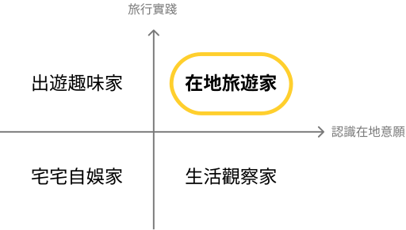
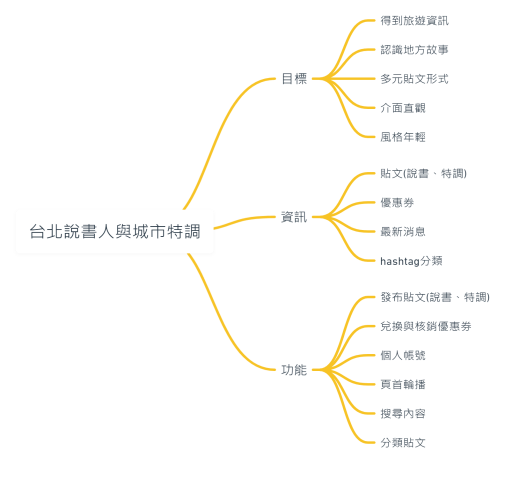
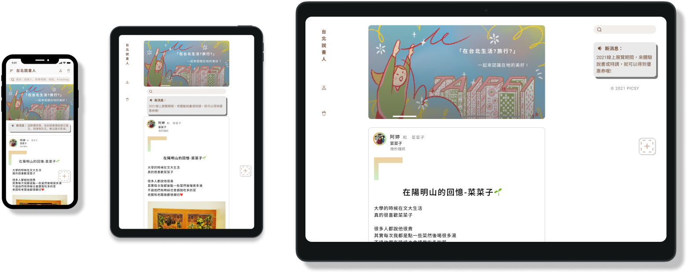

台北說書人&城市特調
Taipei Story-teller & Citea
可瀏覽、分享在地故事與旅遊資訊的平台
有趣的特調遊戲，還結合在地的手搖飲優惠券
2020 ~ 2021 | Web
我的角色：UI/UX x 概念發想 x 商業合作
成果
80%
受試者有使用意願
2020
年度晉級DFT決選
2021
年度參與DFT展出
1
年專案
3
原型迭代
5
訪談與問卷
介面美觀
–使用者回饋操作直覺
–使用者回饋概念有趣
–使用者回饋UX
認為：人與地方的連結很重要 ——
想要幫助年輕人，
從旅遊資訊中認識地方故事。
01
現況分析
從背景研究發現以下趨勢：
從訪談、問卷發現年輕族群：
對在地好奇
91.7%的TA喜歡和當地貼近的感覺，92.3%的TA想嘗試在旅行中更認識在地，95.5%的TA在旅行過程中常對當地保持好奇心。
認識地方不輕鬆
TA在訪談中提到，認識地方雖然有意義，但較讓人感到耗時、耗心力。此為最重、最普遍的痛點。
旅遊資訊的需求
93%的TA希望能找到一些在地人推薦的資訊，卻只有32.6%的TA的需求被滿足。而49.5%的TA認為私房景點的資訊不多、不易收集。
02
目標族群
Persona Matrix
TA為有認識在地意願、旅行實踐的「在地旅遊家」
Persona
阿豪，22歲
「如果景點有故事，造訪時能更有感覺，例如這條街誰走過、發生什麼事。 」
爽點
較喜歡靜態的故事 傳遞媒介（例如展覽），可以讓他感到自在。
痛點
重視與朋友的互動、話題。認識在地、和朋友相處，可能會有時間上的衝突。
邱邱，24歲
「還記得那次的居民導覽，不但更認識在地，而且那份感動一直在我心裡。」
爽點
喜歡體驗在地、和當地人互動，走進他們的世界！
痛點
認識在地需耗神，如果外務、課業太繁忙時，疲憊感會讓人不想出門。
小黃，27歲
「平常上班這麼累，週末就是要來趟小旅行啊！等不及要探索這座城市了！」
爽點
喜歡探索，也喜歡美食。身為小資族，如果得到優惠，會更吸引他。
痛點
有時缺乏探索在地的資訊管道，認為網路找到的景點常常太大眾或無趣。
03
設計過程
Insight
TA需求
根據背景研究與問卷、訪談，發現TA有認識地方、旅遊資訊的需求。
Goal
連結在地
產品需包含地方資訊、在地旅遊資訊等，來滿足TA需求。
Design
台北說書人
線上為可瀏覽、分享在地與旅遊資訊的平台。
線下則結合特調優惠券，增加使用者走入在地的機會。
Insight
痛點&機會
TA表示，認識地方有時很耗神，某些現有解方很枯燥。 另外，TA喜歡新奇創意的事物、手搖飲、優惠等。
Goal
新奇有趣
透過趣味性來減輕TA痛點，吸引年輕族群。並且融入TA喜歡的元素。
Design
城市特調
將具有台灣特色且受到TA喜愛的手搖飲，轉換為呈現對在地感覺的方法，並且結合在地茶飲優惠券，有食閣有掠。
Insight
訪談&趨勢
關於認識在地的時機，部分TA傾向在旅遊中，但也有部分TA希望在旅遊前後或等朋友的空閒時間。
另外，根據創市際研究，使用手機上網的民眾佔比85%。
Goal
彈性方便
產品需減少時間、空間的障礙，並依據使用趨勢，以方便性為主，提升使用的彈性。
Design
初期：平台網站
產品定位為線上平台。裝置則以手機為主，電腦為輔。產品開發初期，先以網站為主。可降低開發和維護成本，並善用SEO。並利用現有技術消除與App之間的差距。
功能地圖
UI
04
視覺設計

品牌概念
以色彩帶出「在地」、「茶飲」的概念。並在說書的介面設計加上對話框，以引號來傳達「說書」的概念。
介面簡單
我將平台結構簡單化、觸點最少化，使介面設計清楚易瞭。讓使用者體驗更友善、降低學習成本。
風格年輕
比較TA常用的產品後，把介面設計得更貼近TA熟悉的風格。並加入亮色漸層、毛玻璃等流行元素，吸引TA。
05
設計規範
色彩
#724E39
#BCAAA0
#F1EEEC
大地棕
主要使用於說書。以大地棕色，來呈現「在地」的含意。
#598214
#7A9B43
#EFF3E8
特調綠
主要使用於城市特調。以茶葉綠來呈現茶飲、特調的概念。
雙色漸層
#E19D3C
#9BDD92
特別色
主要使用於會員分級。將大地棕、特調綠提升明度和彩度，貼近TA風格。
字體
思源黑體
(中文)
Roboto
(英文)
x1.5
(行高)
圖標
06
介面原型
UI Flow

RWD設計
網格系統
12 Columns
Margin: 42px
Gutter: 20px
三欄設計
區塊設計採三欄式，目的為避免閱讀視角過大所造成的負擔。
header置左
確保垂直距離最大化，營造充足的閱讀環境。